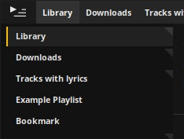

Tauon Music Box
Your new favorite music player for the Linux desktop!


Tauon music box is a modern streamlined music player with a minimal interface that's packed with features! An emphasis on playlists and direct file importing puts you in control of your music collection.
Heres just some of the features:
- Gapless playback
- Excellent CUE sheet support
- Simple drag and drop importing
- Last.fm and Listenbrainz scrobbling
- Search for tracks, artists, albums and folders using the advanced search
- MPRIS2 support for desktop integration
- Multiple layouts including compact, mini, gallery and large album art!
- Quick search on sites Genius and Rate Your Music
- Extract and import your downloaded archives in one click!
Install
You can download the app on Flathub:
For Arch Linux based distros, you can also install from the AUR.
If you have any issues, suggestions or questions, feel free to create an issue on the Github page, or for comments and feedback you can find my contact email on Github also, or just hop onto the official Discord server.
Manual
Welcome to Tauon Music Box.
Tauon is a playlist oriented music player that makes that assumption that folders are albums. (You may find the words "album" and "folder" used interchangeably withing the interface and documentation)
While some features and interface elements may not be immediately intuitive, I hope that once you are a familiar, you will find that Tauon is pleasant, fun and fast to use!
When you launch Tauon for the first time, you should be greeted with the main window that looks something like this:

Importing tracks
To import tracks, simply drag and drop files or folders from your file manager into the main tracklist area.
Tip: To get started, try import all your music into the single playlist.
Once you have tracks imported, just double click them to play.
Updating
Tauon has no background file monitoring. To update, simply clear the playlist and re-import.
Alternatively, if the first folder you ever imported to a playlist was a top level folder, you can activate "Rescan Folder" from the playlist tab context menu.
Playlist navigation
The top panel contains the playlist tabs. Click a playlist tab to switch the tracklist view to that playlist. You can also mouse wheel scroll to cycle through them.
Hint: Playback from any original started playlist will still continue.
You can create a new empty playlist by clicking MENU, then clicking "New Playlist".
You can delete a playlist by middle mouse clicking on the playlist tab you want to delete.
You can drag tracks from the main tracklist and drop them onto a playlist tab to add them to the end of that playlist. Also, if you drag and drop tracks to the right of all the playlist tabs, this will create a new playlist of those tracks.
You can drag playlist tabs to re-arrange them. Hold Shift to merge one playlist onto the end of another. Hold Ctrl while dragging to the right of all the tabs to create a duplicate of that playlist.
The bottom panel
Starting from the left:
- Play button.
Feature: Right click the play button to go to playing. This will locate the currently playing track in the tracklist. The playlist will be switched if nessesary, however if there is another matching track in the currently viewed playlist, it will be located and set to be the playing track instead. (This is useful for example, if you were playing a single track from a shuffled playlist, and you then wanted to continue playback from the full album that resides in another playlist.)
- Pause button.
- Stop button. You can right click this to activate auto-stop, which will automatically stop when the end of the current track is reached.
- Previous button.
- Next button.
Feature: Next and Previous normally play songs as they appear in the playlist. However with shuffle mode on, Previous plays tracks from playback history.
Staring from the bottom right:
- Playback time indicator. You can click this to cycle available display modes: Time elapsed, Time remaining, Elapsed + track length and Album elapsed + album length.
- Volume bar. You can right click to mute.
- Playback menu.
- Shuffle toggle. You can right click to access the shuffle menu.
- Repeat toggle. You can right click to access the repeat menu.
Tip: If you want to shuffle tracks within a single album, activate both Repeat Album and standard shuffle. (Maybe you're playing this album.) Or you could always just drag and drop to a new playlist and enable shuffle.
Along the top is the seek bar. You can middle mouse click this to bring up a time cursor.
The right side panel
On the top half of the side panel is the album art display. Left click the album art to cycle through any available images.
Tip: Holding Shift while mousing over the album art will tell you the image resolution.
On the bottom half is track metadata. If you right click here, this will bring up the lyrics menu. Once the "Show lyrics" menu entry is clicked, the right side panel will automatically switch to lyrics layout when lyrics are available.
You can resize the panel by dragging the left edge.
Tip: Resize the panel far left for a large album art style layout.

Album on show here is https://music.midwestcollective.us/album/odyssey
You can also toggle between an alternate centered style layout by middle mouse clicking in the side panel.
Gallery view

You can enter the gallery either by clicking MENU, then clicking the gallery layout icon (2nd from the top). or by pressing mouse button 4 (the one closer to you) on a 5 button mouse.
You can also enter the gallery in a "keyboard control mode" by pressing Tab
To play an album, just click it. This is a single click by default but you can change it to a double click in settings if you want.
The tracklist
Re-arranging tracks
As mentioned previously, you can drag tracks (or a group of tracks) to another playlist by dragging and dropping. You can also drag to re-arrange tracks within a playlist if you hold Shift then drag. (Note that moving a group doesn't require shift)
Scrolling
You can scroll using the mouse wheel.
There is also a scroll-bar hidden to the left of the playlist until you mouse over. In the scroll bar you can hold down the mouse button above or below the grip to scroll quickly in that direction. You can also right click to jump to an absolute position within the scroll field.
The left side panel
To toggle the left side panel, click the far top-left corner button.
The left side panel has multiple available views. To switch between them, right click the toggle button to bring up a menu that lists the other views.
Playlists + Queue (Left side panel)
As you create more playlists, there won't be enough room for them all on the top panel. This "Playlists + Queue" view lists all your playlists.
These tabs behave similar to the top panel tabs. There is a toggle switch to the left of the playlist title that allows you to unpin a tab from the top panel.
Tip: Just keep tabs Pined when you want quick access to them.
Artist List (Left side panel)
This layout lists artists from the current playlist. See here for details.
Folder Navigator (Left side panel)
This view lists folders in the current playlist.

Double click a folder to play. Single click to simply locate that folder in the playlist.
If there are sub-folders in your collection, this will be presented in a tree style layout. Note that this doesn't directly represent folders on your filesystem, but rather it tries to intelligently list only relevant nodes of the folder structure of tracks you already imported.
Tip: If you have a large music collection, you could consider keeping your collection divided in separate sub-folders based on, for example, different genres. This will allow you to navigate your music collection more easily using the folder navigator.
Warning: In the right click context menu of a node level folder, there's an option named "Move playing folder here". Note that this is a physical move of the folder of the playing track to the selected folder on disk. The folder will be placed in an additional sub-folder that has the name of the artist of the album. (Folder will be created if it does not exist.)
This feature is useful if you have multiple library locations you want to transfer albums between, or between different sub folders such as suggested in the above tip.
Global search
This search complies different types of results from all playlists. It will automatically activate when you start typing.
Clicking an Artist, Genre or Folder result will create a new playlist of the result. Clicking a Track or Album result will play it.
Right clicking any result will simply locate the result instead of playing or creating a new playlist.
Ctrl + clicking will add the result to the current playlist without closing the search screen
Quick find
The find box locates tracks within the currently viewed playlist.
To use the find box, press Ctrl + F and type search terms, then use UP and DOWN arrow keys to jump to next and previous results in the playlist.
Tip: You can press Shift + Enter to create a new playlist of all matching results.
This can be useful for example, finding artists in features or filenames that may not be picked up by the global search.
Since this also searches the filename, you can use this to create a playlist of tracks of a single file type, for example searching .ogg
Mini Mode
Album on show here is https://illeniumashes.bandcamp.com/album/ashes

To enter Mini-mode, double click in the area under the seek bar of the main window.
You can switch to different styles by right clicking in the same area under the seek bar and selecting an option from the menu.
While in mini mode, you can pause by right clicking.
Audio backends
Currently, Tauon supports two different audio backends you can choose from in the Audio settings: BASS and GStreamer.
- BASS is closed-source/proprietary while GStreamer is open-source/free software.
- Tauon currently has more feature implementation with BASS. (Visualisers, Outbound broadcasting)
- One or the other may perform better on your setup. However, BASS tends to perform better generally.